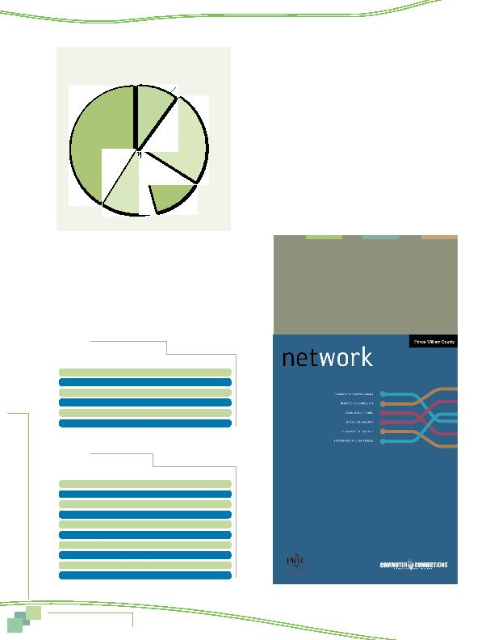

MWCOG-Comm
uter Conn
ecti
on
s-- 2010 State o
f th
e Comm
ute Report
7 0
Figure 69
Employer Type
Private sector
41%
Federal agency
24%
State/local
agency
12%
Non-profit
13%
Self-employed
10%
EMPLOYMENT CHARACTERISTICS
Type and Size of Employer
Type
Respondents were asked for what type of employer
they worked and the number of employees at their worksites. These
results are shown in Figure 69 and Table 43, respectively. Four
in ten (41%) respondents worked for a private sector employer.
Government agencies employed about the same share: federal
agencies, 24%, and state and local agencies, 12%. About one in
ten (13%) worked for a non-profit organization and the remaining
10% were self-employed.
Size
The majority of respondents worked for employers that
are either very small or very large (Table 43). More than four in
ten (44%) worked for firms with 100 or fewer employees. About
a quarter (27%) worked for employers that employ 1,000 or more
employees.
Occupations
Respondents represented many occupations, as shown in Table
44. About six in ten respondents worked in professional (39%) or
executive/managerial occupations (21%). Other common occupa-
tions included administrative support (12%), and technicians/
technical support (11%).
Table 43
Employer Size (n = 5,933)
Number of Employees
Percentage
1-25
25%
26-50
8%
51-100
11%
101-250
13%
251-999
16%
1,000+
27%
Table 44
Occupation (n = 6,252)
Occupation
Percentage
Professional
39%
Executive/managerial
21%
Administrative support
12%
Technicians/technical support
11%
Sales
4%
Service
4%
Precision craft, production
3%
Protective services
2%
Military
2%
Other*
2%
* Each response in the "Other" category was mentioned by fewer than one percent
of respondents.
Nearly 60% of respondents worked
for employers that had 100 or more
employees.
Characteristics of the Sample